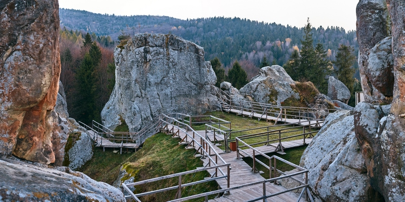

Travel Time
22°
Тустань + Сколівські Бескиди

Загальна відстань: 220–250 км
Час: 10–12 годин
Тустань
Водоспад Кам'янка
Журавлине озеро
Плюси:
Мінімум музеїв, максимум природи. Підійде для легкого трекінгу. Дуже красиві краєвиди Карпат.
🚗 Прокласти маршрут у Google Maps
 22°
22°
22°
22°